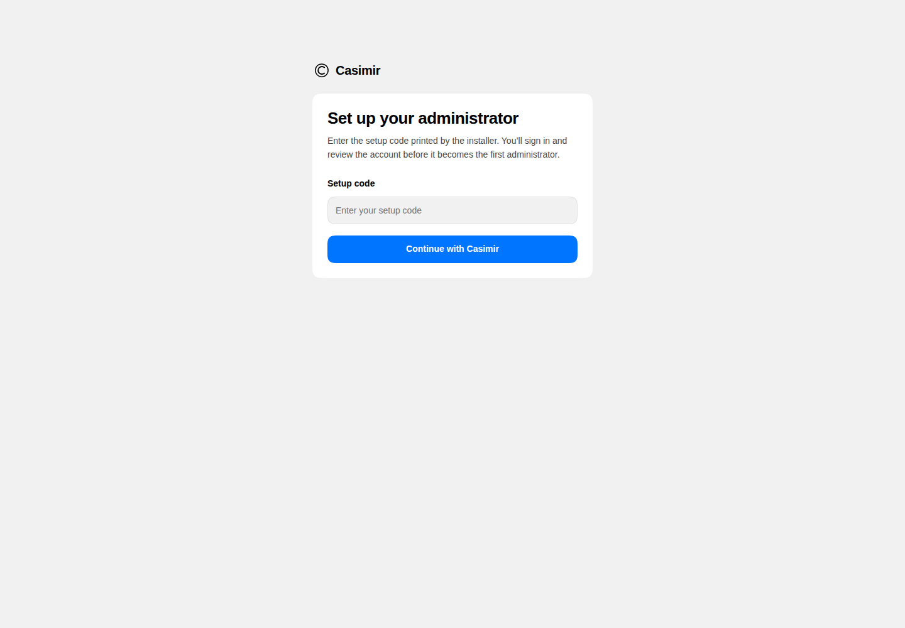
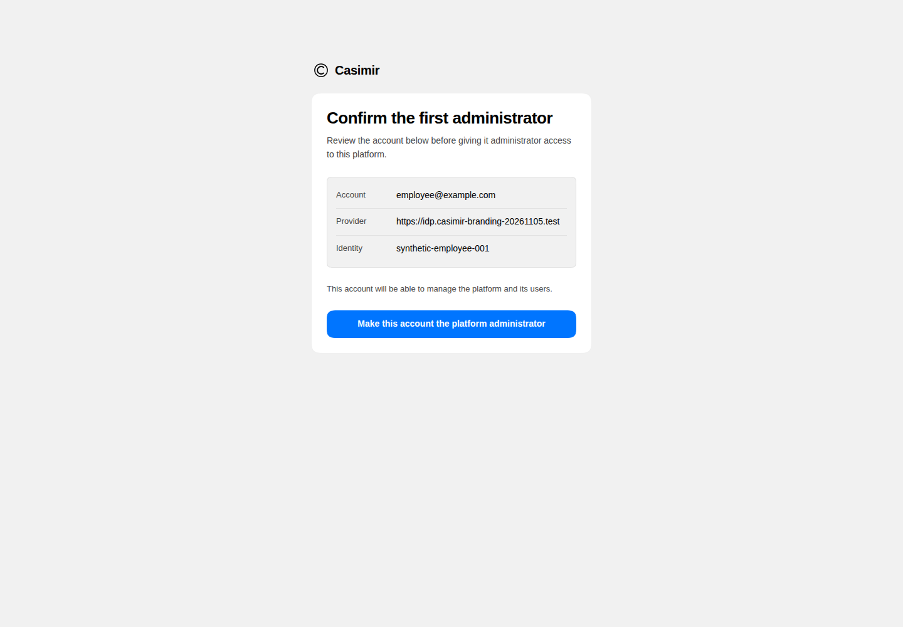
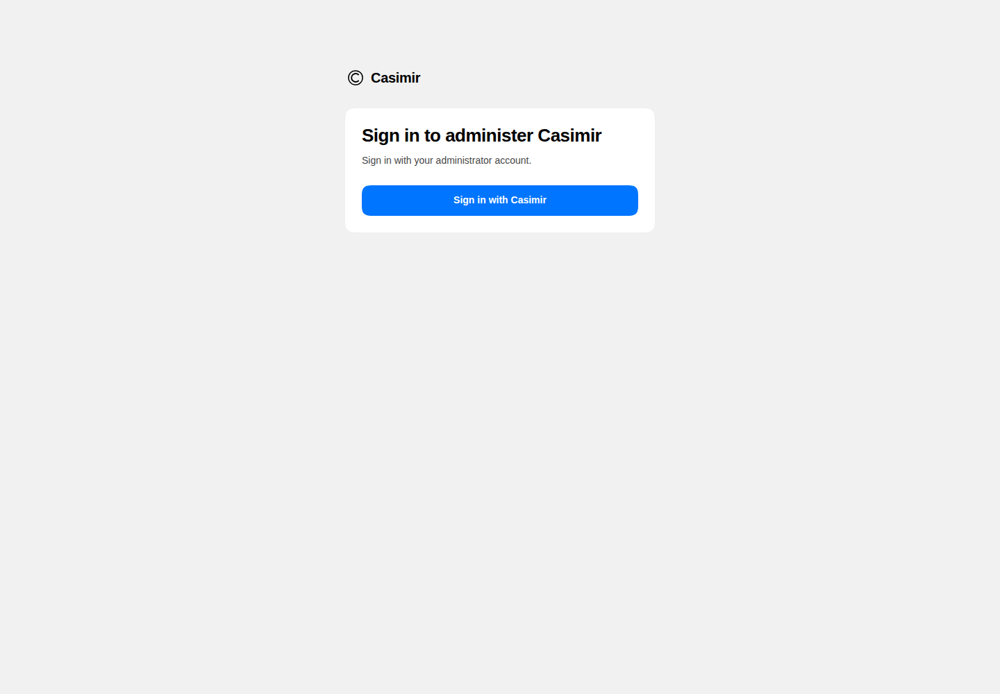
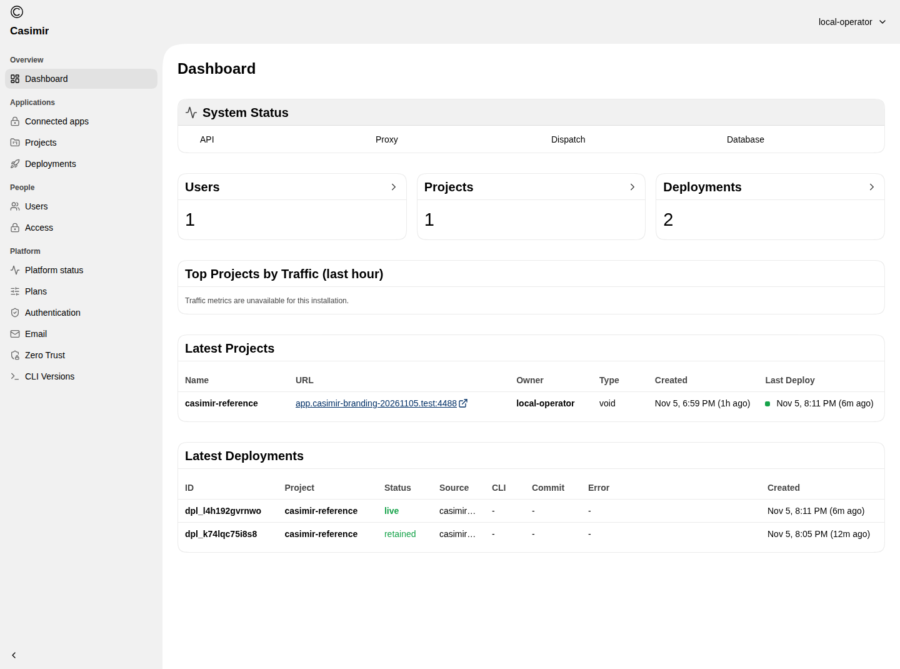
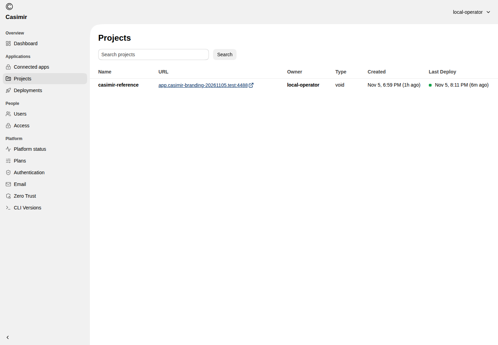
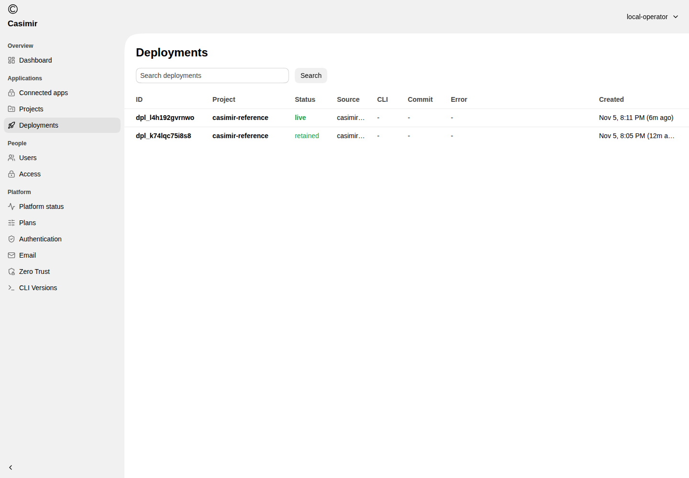

A notes app
The demonstrated app lets a person write a short note, save it, and see it in a list.
A short guide to using Casimir
Install the private preview, publish an internal app with the Void SDK, use it in a browser, and review the same app in the Casimir console, adapted from Void.
Prepare → Publish → Open → Use → Update
Casimir is a self-hosted app platform in private preview. It explores a way for a company to publish and run internal applications on infrastructure the company manages, while developers keep using the Void SDK workflow. Administrators sign in to the Casimir console, adapted from Void.
The demonstrated app lets a person write a short note, save it, and see it in a list.
A developer uses the existing SDK workflow to publish an app artifact inside the company’s Casimir project.
The demonstrated app update kept its notes. Earlier lifecycle checks also exercised backup, independent restore and a compatible platform upgrade.
The focus here is using Casimir to publish an app. It is not a guide to publishing Casimir itself.
An administrator installs the supplied release on a controlled server, configures separate secure console and app addresses, and connects the company’s OIDC sign-in.
These are actual Casimir screens. The code field is empty; the displayed identity is synthetic.



This preview demonstrates a trusted operator and shared project. Multiuser company operation and the complete management feature set remain separate verification work.
A developer prepares the app with the bundled Void SDK and publishes it to the company’s Casimir project. The administrator supplies the server address, project and private publishing access.
The demonstrated app is a small notes tool. Publishing remains a developer workflow. Use the instructions for the exact reviewed bundle.
Open the secure app address, enter a note and save it. The note appears in the list and remains after refresh. The developer then published an updated heading while retaining the saved note, and a second note was saved.
The notes are synthetic demonstration data.
The administrator sees the same SDK-published project and deployments. The reused interface now displays Casimir branding.



Enrollment, sign-in, these views, normal sign-in were exercised. Traffic metrics are visibly unavailable. Other navigation items retain their own functionality and verification requirements.
An earlier controlled lifecycle trial exercised encrypted backup, independent restore and one compatible platform upgrade with retained notes. Those checks were separate from this fresh branded installation and were not repeated for these screenshots. Use the lifecycle commands shipped with the reviewed bundle and keep backup keys private.
Use the supported lifecycle commands in the supplied release. This report describes the verified controlled path; it does not establish a general recovery or production guarantee.
A real notes app and the Casimir operational console, demonstrated with one trusted operator and one shared project.
Multiuser operation, arbitrary application compatibility, the remaining management actions and production qualification are outside this demonstrated path. The separate optional account dashboard is another upstream surface.
All screenshot data is synthetic. Images are unchanged captures from successive controlled checks, not one uninterrupted recording. This offline report does not promise a service is reachable from the reader’s machine, and no website or release has been published.
See evidence and scope, installation steps, or the Markdown walkthrough.